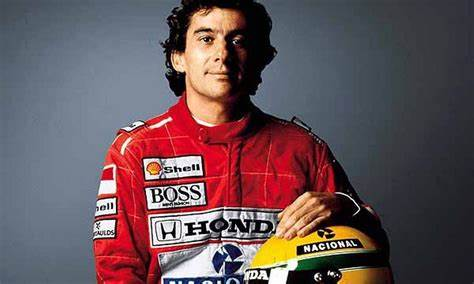

Ayrton Senna da Silva foi um piloto brasileiro de Fórmula 1, campeão da categoria três vezes, em 1988, 1990 e 1991. Ele começou sua carreira competindo no kart em 1973 e em "carros de fórmula" em 1981, quando venceu as Fórmulas Ford 1600 e 2000. Em 1983 alcançou o título de campeão do Campeonato Britânico de Fórmula 3 batendo vários recordes. Seu desempenho impulsionou sua ascensão à Fórmula 1, fazendo sua primeira aparição na categoria no Grande Prêmio do Brasil de 1984 pela equipe Toleman-Hart. Em sua primeira temporada, Senna pontuou em cinco corridas, fechando o ano com treze pontos e a nona posição na classificação geral dos pilotos. No ano seguinte, ingressou na Lotus-Renault, pela qual venceu seis grandes prêmios ao longo de três temporadas.
10 Fatos sobre Ayrton Senna

O apelido de Ayrton Senna na infância era Beco. Ele queria ser chamado de “Becão”. Senna ganhou um mini-kart construído pelo pai aos quatro anos.
Ao longo de sua carreira, Ayrton Senna conquistou 41 vitórias (19 de ponta a ponta), 161 GPs, 2.750 voltas na liderança, 65 poles e 3 títulos mundiais.
No ano de 1983, Senna correu uma prova inteira de Fórmula 3 na Inglaterra com o carro sem freios. Os mecânicos, a princípio, não acreditaram, mas ao verificar as pastilhas viram que elas estavam geladas.
O circuito inglês de Silverstone, onde ele venceu nove provas seguidas na Fórmula 3, foi apelidado de Silvastone, numa referência ao sobrenome Silva do piloto brasileiro.
Em março de 1995, o capacete que Ayrton Senna usou ao conquistar seu primeiro título de Fórmula 1 (1988) foi a leilão. O lance vencedor foi de 45 mil dólares e o capacete tinha os autógrafos de Senna e Xuxa.
Senna ajudou a fazer do Acura NSX um ótimo carro.
Venceu o Grande Prémio do Brasil em 1991 sem utilizar a caixa de velocidades.k
Além de Nelson Piquet, o francês Alain Prost, que foi companheiro de Senna por duas temporadas na McLaren-Honda, fez uma das rivalidades mais acirradas da história da F-1.
Senna teve um funeral de Estado onde cerca de 500 mil pessoas foram às ruas para assistir a passagem do caixão.
Michael Schumacher ganhou a corrida reiniciada. Na entrevista coletiva que seguiu a corrida, Schumacher disse que “não podia sentir-se satisfeito, não podia sentir-se feliz” com a vitória depois dos eventos ocorridos durante o fim de semana.